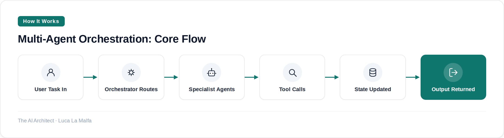

A practical guide to orchestrating multi-agent systems without losing control of state, cost, or correctness.
September 24, 2026
Most multi-agent failures I've debugged weren't model failures — they were architecture failures. Someone wired up four agents in a loop, gave them all write access to the same state, and wondered why the system kept contradicting itself by step three. The orchestration layer is where you earn your money on these projects, and it deserves as much design time as the prompts themselves.

Rules Before You Write a Single Agent
Define state ownership first
Decide which agent can write to which part of shared state. Overlapping write access is the fastest path to garbage outputs.
Make the orchestrator dumb on purpose
The orchestrator should route and sequence — not reason. Reasoning belongs inside the specialist agents, not in the router.
Set hard token budgets per agent
Without per-agent limits, one runaway sub-task will blow your cost ceiling before the workflow finishes.
Treat every tool call as fallible
Network calls fail, APIs rate-limit, schemas change. Every agent that calls a tool needs a defined fallback, not an implicit retry loop.
Log agent inputs and outputs separately
Aggregate logs are useless for debugging. You need to replay exactly what each agent received and returned at each step.
crewAIInc/crewAI — Framework for orchestrating role-playing, autonomous agent crews.
Checklist Before Going to Production
Idempotency on retries
If an agent re-runs the same step, it must not duplicate side effects — double-sent emails, double-written DB rows, double-charged API calls.
Human checkpoint for irreversible actions
Any action that can't be undone — sending a message, committing a transaction — needs a pause-and-confirm step, even in a mostly automated flow.
Timeout at the workflow level, not just per-agent
Individual agents can each respect their limits and still leave you with a hung orchestrator. Set a ceiling on total wall-clock time.
Test with adversarial inputs
Feed the workflow malformed data, empty results, and contradictory tool outputs before your client does it accidentally in week two.
Inspired by SF October 14th: A Birds of a Feather Session on Agentic Engineering (Simon Willison)